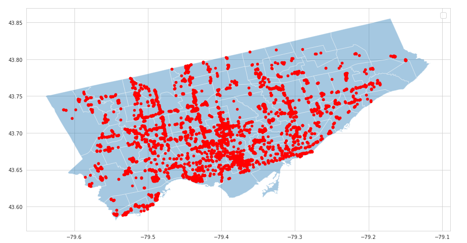
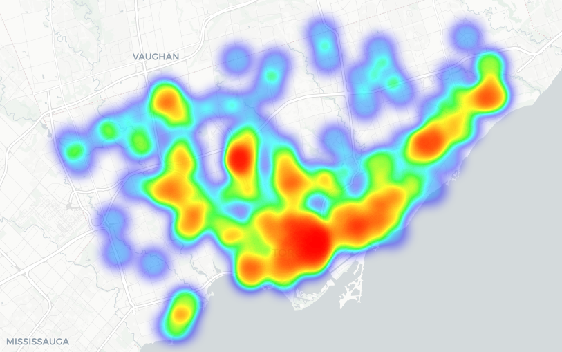

Toronto Apartment-Market Analysis
GitHub Link
Summary: data science project from start to finish
I initially conduct an exploratory analysis on the
dataset
to examine the distribution of features.
I cleaned the data by removing unnecessary columns and fill in null-cells
by KNN (tractable due to size of dataset).
Categorical variables are encoded.
Then I remove outliers based on standard deviation, and
add more features with polynomial augmentation.
Processed dataset is then normalized and split to train-test.
We add a predictive model utilizing a random forest regressor,
predicting number of floors to the general condition of the building with 86% accuracy.
Conduct cross-validation by k-fold split.
Finally, I created the visualizations for this dataset to tell a story.
Here we see the distribution of apartment buildings for the GTA.

We plot a heatmap of buildings belonging to the
Toronto Community Housing Corporation.

More visual examples in the GitHub repo.
Nostradamus
Summary: algorithmic trading assisstant
It is a collection of modules mostly all feeding to a single reinforcement
learning model.
Data collection for news articles conducted by the Aylien News API, sentiments
analysis done using an uncased multilingual BERT model.
Real time stock price data collected selectively with yfinance API
due to rate limits.
Simulations on interest rates by Monte Carlo with geometric Brownian motion
used for bond pricing.
Asset allocation for portfolio holdings simulated by Monte Carlo
on the Markowitz model.
Experiments on particle filtering, survival anaylsis, and anything I learned
from university or online courses.
Data Science Bank
GitHub Link
Summary: notes but in code format
Concepts I have learned from academia or online-courses. I convert them to code
and store in this repo for easy access later on.
Includes a boilerplate template on how to best approach a data science project,
formulated and tweaked by me throughout the years.